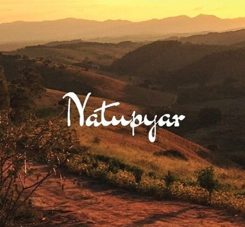
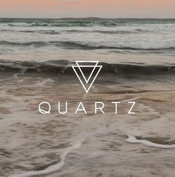

- Home
- >
- Sobre
Sobre nós
Natupyar

Ela de Pernambuco, ele de Minas Gerais.
O casal de artesãos Amanda e Roussealli se encontraram por acaso e não demoraram muito a perceber que eram almas gêmeas. O amor pela natureza, a busca por espiritualidade, a vontade por desvendar lugares e principalmente o propósito de construírem uma vida alternativa fez com que Amanda se mudasse pra Pouso Alto, uma cidadezinha no sul de Minas.
Juntos, construíram uma casinha pra lá de aconchegante no alto de uma montanha na Serra da Mantiqueira. Rodeada pela floresta nativa e abençoada por uma nascente de água pura e cristalina, o lugar recebe todos os dias a visita do lobo guará e o brilho do pôr do sol que se estende por todo horizonte.
Dessa união nasceu a Natupyar, nome que eles atribuem ao trabalho que realizam com cristais, madeira e arte em macramê. Uma forma que encontraram de levar luz e cura ao próximo através das pedras. Cada peça Natupyar é feita artesanalmente com muito carinho o segue energizada pela natureza para os seus donos.
Quartz

Meu nome é Andressa e sou sobrinha do Roussealli que é o companheiro da Amandinha. Aqui escrevo em primeira pessoa por ser a redatora neste site já que meu tio é avesso à tecnologia rs. Bom, passei tanto tempo da minha vida ao lado dele que poderia até chamá-lo de segundo pai, mas prefiro chamá-lo de melhor amigo. Essa é a melhor definição que encontro para traduzir nossa relação de intermináveis conversas, risadas e cumplicidade.
Foi acompanhando a Natupyar em sua trajetória que comecei a me encantar pelos cristais. Sabe quando uma criança vê outra tomando sorvete e quer também? Pois é, aconteceu assim. Quando vi meu tio fazendo uma coisa incrível, quis fazer também e hoje, com o seu apoio e incentivo, estou me aventurando a conectar o design que aprendi na faculdade aos conhecimentos metafísicos que a vida vem me ensinando.
A QUARTZ é o produto dessa mistureba boa: uma linha de acessórios com um desenho delicado unido à materiais acessíveis e com significado, um design com propósito.
← Voltar ao início